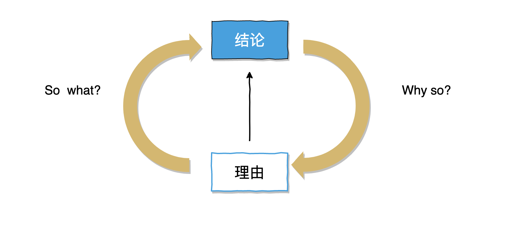
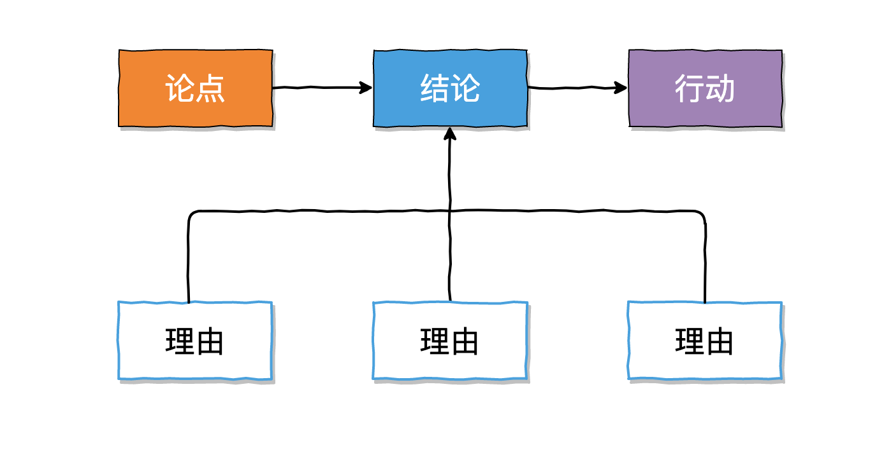

逻辑思维, 只要五步¶
干事没逻辑，再累也是白忙活！
- 作者
下地宽也[🇯🇵]
- 出版社
北京联合出版社
- 购买日期
2020-06-01
- 主要内容
理清思路, 表达自己的技巧
Step 1 金字塔图——组织语言, 快速表达
Step 2 “并列型” 还是 “串联型”——把理由连接起来
Step 3 MECE 分析法——消除遗漏、避免重复
思考问题的解决方案
Step 4 树状图——分解挖掘
Step 5 矩阵图——进行评价, 得出结论
理清思路，表达自己的技巧¶
逻辑性语言所需要的 3 个重点
有结论
有理由
结论和理由相联系
有结论——并非所有的场合都需要有逻辑，逻辑性语言必须有**结论**
需要逻辑性语言的场合: 报告、联络、指示、建议、说明、提案、交涉、会议中的发言、事故应对
并不一定需要逻辑性语言的场合: 商量烦恼之事、提出想法(发散性思维反而能提出好想法)、信息交换
用 “因为”、“所以” 等连接词，让理由和结论更明确
Why so ?(为什么这么说)
So what?(因此要做什么)
Step 1 金字塔图——组织语言, 快速表达¶
论点 ==> 结论 ==> 理由 ==> 行动
写 3 个(2-4个)支撑**结论**的理由, 构成“金字塔”的形状，让结论很牢靠.
论点 ==> 结论 ==> 理由 ==> 行动的表达，让沟通清晰有条理，更容易被理解.
论点¶
如何开始你的谈话——找到论点.
所谓论点就是接下来谈话的内容是什么，谈话的中心就成为问题点(问题或疑问). 换个说法，论点是尚未得出的结论的事情，也就是未决事项.
论点由 “情况 + 问题点”构成.
从对方了解的情况开始阐述，沟通更容易
为了明确论点，在说问题点之前，先说情况(或背景)。先阐述听的人能够理解的“情况”、“背景”，这样便于听的人顺利进入话题.
为了让听的人站在和自己共通的前提条件下，就需要注意从对方能够理解的情况开始阐述.
考虑的问题应该是有意义的问题
与工作相关的论点(问题点)的类型有 3 种:
原本什么是问题? (提出问题: what)
为什么会产生这个问题？(查明原因: why)
有什么样的解决方案？(检讨解决方案: how)
who
where
when
how much
论点应该是“有思考意义的内容”。有意义的论点就应该是“能联系到行为的问题”。没有意义的论点是“没有意义的问题”.
结论¶
把你最想说的作为结论
结论和论点的关系
让论点的回答成为结论
结论和理由的关系:
把许多想说的内容作为理由积累起来，把其中最想说的作为结论。
结论和论点的 3 种组合方式
模式 1：
论点：提出问题: what
结论：问题是xxx
模式 2：
论点：查明原因: why
结论：原因是是xxx
模式 3:
论点：检讨解决方案: how
结论：解决方案是是xxx
yes/no 模式：
论点：is xxx?
结论：yes/no
Step 2 “并列型” 还是 “串联型”——把理由连接起来¶
Important
逻辑性的结论和理由的连接方法只有两种:
并列型(归纳法)
串联型(演绎法)
结论和理由连接的两种方式¶
并列型(归纳法的列举理由)
并列几个不同的事实，从这些事实中找出共通点，从而得出结论的方法
特点: 结论终究是个推测出来的内容，如果要正确地表达，结论的说法应该是“似乎是”
优点: 同时列举了多个理由，即使有一个理由不充分(即使根据变弱)也能凭借剩下的理由来支撑结论
串联型(演绎法的列举理由)
将某个事实和与其对应的某个规律(决定、一般常识、法规等)进行组合，从而得出结论的方法